What is a
coding agent?
Two assistants with almost the same name and almost nothing in common. One works inside software projects, on code and tests and version history. The other works on the documents, spreadsheets and decks that fill an ordinary week. Both will attempt either job, and only one will do it well.
A conversation that happens in every office within a week of someone discovering these. Tap through it.
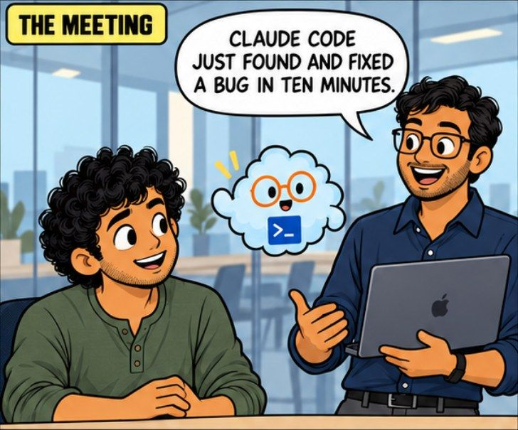
A colleague mentions it in passing
Every major company now has two of these, and the naming does not help. The coding one and the work one usually share a brand, sit in the same account and are built on the same model underneath.
From the outside there is nothing to tell you they are for different jobs. So people meet whichever one a colleague mentioned first, form an impression of what AI at work means from that, and carry it into tasks it was never built for.
The good news is that once you can name the difference, it stops being confusing for good. That is the whole of this page and it takes about five minutes.
It works inside a software project: the actual code files, the tests that say whether something still works, and the record of every change anyone has made.
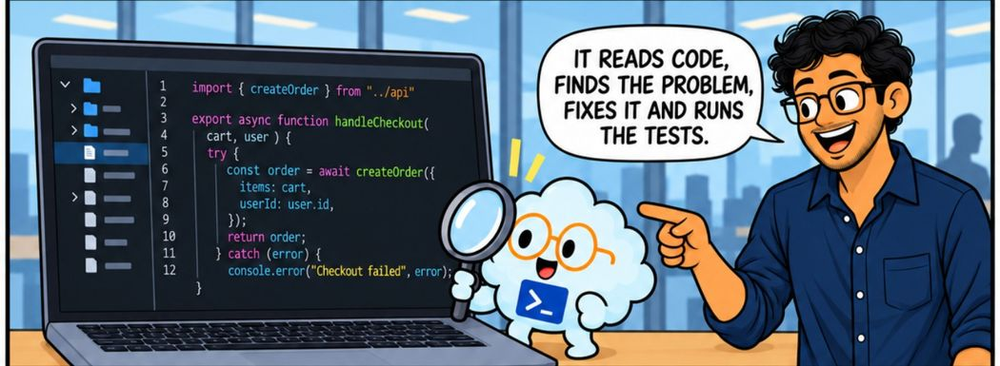
It reads before it changes anything. Opens the project, works out how the pieces fit together, finds the part that is wrong, fixes it, then runs the tests to check it did not spoil something else.
You describe the symptom, not the fix. Find out why customers cannot check out. You do not need to know which file is at fault, which is the part that used to require an engineer.
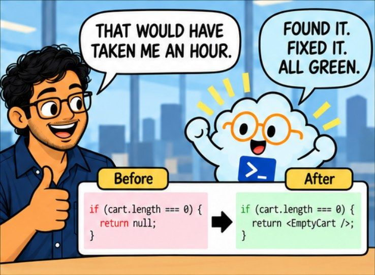
An hour of work, done and checked. The before and the after are both visible, so someone can look at exactly what changed and disagree with it if they want to.
It reads the whole project
Not the one file you pasted in. The entire thing, including the parts you forgot existed.
It changes many files at once
A real change is rarely one line in one place. It edits across the project and keeps the pieces consistent.
It checks its own work
It runs the tests, reads what failed, and has another go.
It leaves a record
Every change is written down, described, and can be reversed.
A coding agent produces code, and code has to be reviewed by a person who can read it. That is the dividing line, not how clever the tool is. If nobody on your side can check what came back, you have not removed the work. You have moved the risk somewhere you cannot see it.
Same idea, pointed at the work that fills an ordinary week. No code, no project, no tests. Files, apps and a finished piece of work at the end.
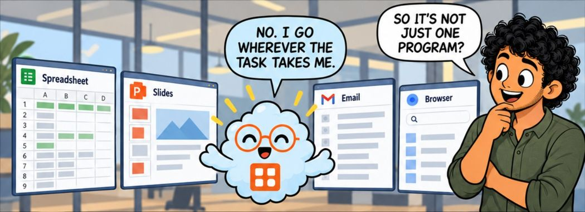
It goes wherever the task goes. Spreadsheet, slides, email, the browser. Not one program you open, but whichever ones the job happens to need.
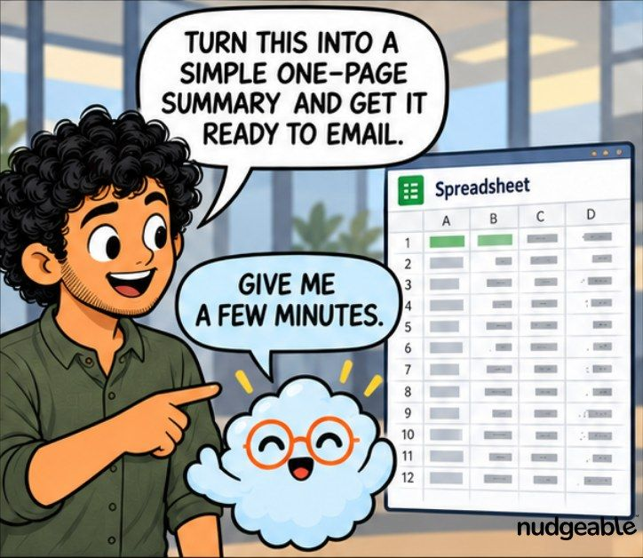
One instruction covering several steps. Read the numbers, write the summary, draft the email. You are not asked what to do next after each one.
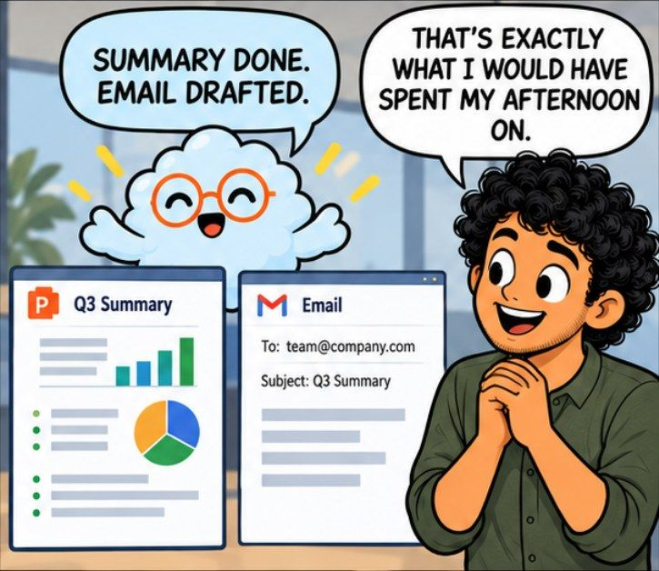
The afternoon you would have spent on it. That is the honest measure of what this saves, and it is why the two get confused in the first place: both sound like magic when described second hand.
If it asks about a repository, a branch or a terminal, it is the coding one. Those words only exist in software projects. Nothing in an ordinary week has a branch.
If it asks which folder to work in, it is the work one. It thinks in files and folders because that is where the work is kept.
If you are still not sure, ask it directly. Both will tell you plainly what they are built for, which is what the character in these panels keeps doing.
Neither of them refuses. That is exactly why the mix-up survives so long.
You still get an answer
It will not stop you. It gives a version of yes, does a passable job, and you never find out what the other one would have produced.
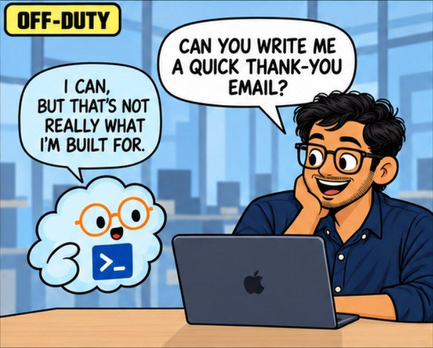
A thank you email from the coding one. It can write it. It is not what it was built around, and you will get something serviceable rather than something good.
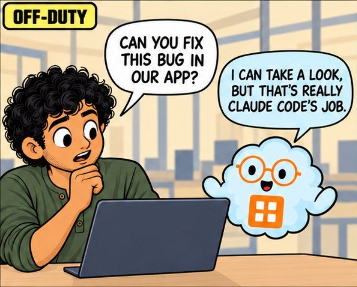
A bug fix from the work one. It can open the file and have a look. It cannot run the tests, so nothing tells anyone whether the fix actually worked.
If either tool said "I cannot do that", you would go and find the right one and lose thirty seconds. Instead you get a reasonable attempt, accept it, and carry on.
Nothing feels wrong at any point. The output is fine. Fine is the problem, because you had no reason to look for better and no way to know it existed.
This is the one habit worth building: notice which kind of job you are about to hand over, before you type it into whatever is already open.
The difference stops being subtle
Give each the job it was built around and the gap is not a matter of taste. It is visible in the first reply.
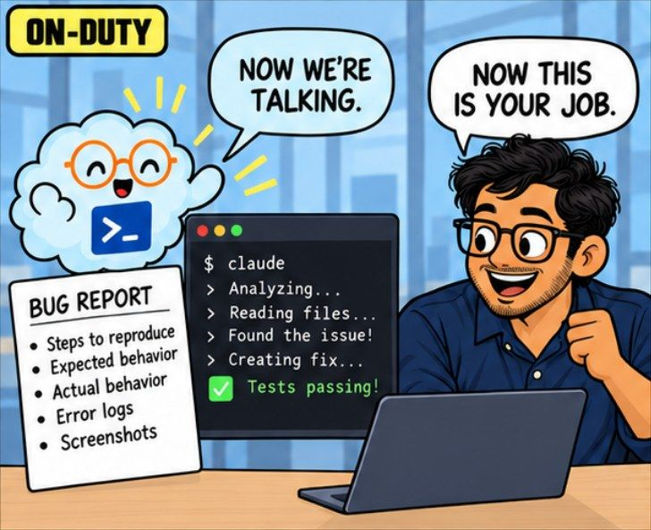
Give the coding one a bug report. Steps to reproduce, what should happen, what actually happens, the error and a screenshot. It reads, finds, fixes and tells you the tests passed.
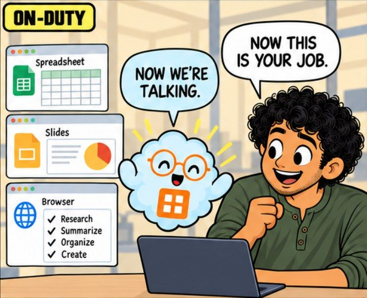
Give the work one a week's task. Research it, summarise it, organise it, build the thing. Several apps, one instruction, and nothing handed back to you halfway.
It is almost never confusion about what they do. It is the pull of whichever tab is already open.
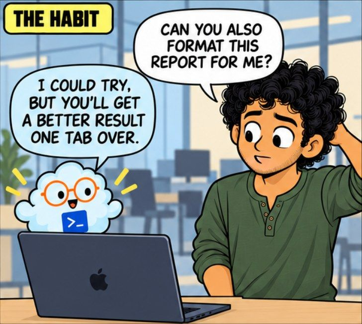
You ask the one you already have open. It tells you plainly that you will get a better result one tab over. Most people carry on anyway, because switching feels like effort.
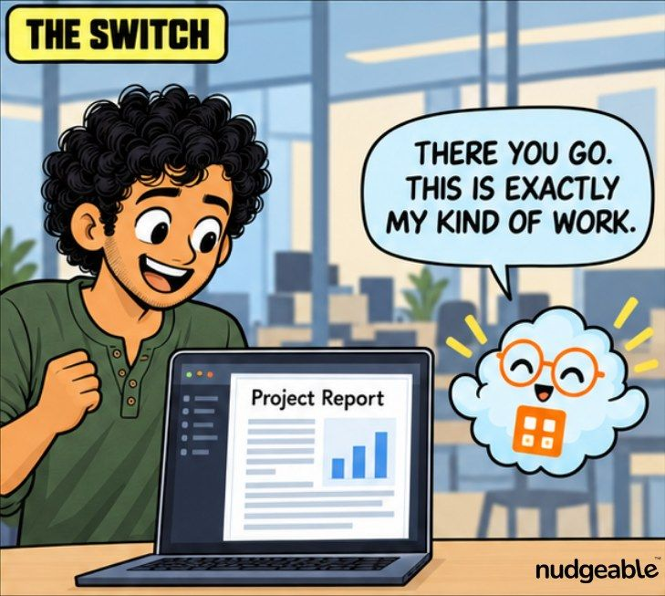
Switching costs about four seconds. That is the entire price of the better result, and it is almost always worth paying.
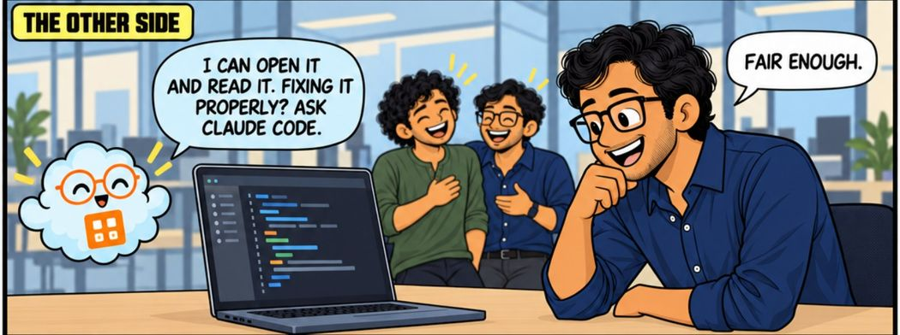
It goes both ways. The work one can open a code file and read it to you. Fixing it properly is somebody else's job, and it will say so if you ask.
One wrong request costs you a slightly worse answer. Doing it for six months means your whole impression of what these tools can do came from using them for the wrong things. People decide AI is overrated on exactly this evidence.
Tap a card to turn it over.
"They are the same product with two names, so it does not matter which I open."
Tap to flipSame company and often the same model underneath, but built for different work and connected to different things. One reaches your code, tests and change history. The other reaches your files and the apps you work in.
Tap to flip back"A coding agent means we no longer need someone who can read code."
Tap to flipIt writes far more code, far faster, and somebody still has to say whether it is right. Reviewing has become the bottleneck rather than typing. A team without that skill has not saved work, it has hidden the risk.
Tap to flip back"The coding one is the serious one, so it must be better at everything."
Tap to flipIt is built around code, tests and version history, and it carries all of that into a job that has none. On a deck or a summary it is a careful tool being used for the wrong task. Serious is not the same as suitable.
Tap to flip backReal jobs, and where each one belongs. The test is simple: if the answer has to live inside software, it is the coding one.
| The job | Hand it to | Why |
|---|---|---|
| Fix a bug a customer reported | Coding agent | It reads the project, traces the fault to its cause and runs the tests afterwards. All of that happens inside the code. |
| Turn a spreadsheet into a deck for Monday | Work agent | The job is files and formats. No code is involved anywhere in it. |
| Add a new feature to your product | Coding agent | Many files change together, and every change needs a record a person can review and undo. |
| Rename and tidy four hundred files in a folder | Work agent | No code, and the risk sits in the files, so keep the work where the files already are. |
| Write release notes from this month's changes | Either, depending | If it has to read the change history to know what happened, the coding one. If you already have the list, the work one. |
| Build a small tool for your team | Start with one, finish with the other | Prove the idea quickly with the work one. Anything people come to rely on gets rebuilt properly by the coding one. |
They differ mostly in where they run rather than in what they are for.
In your terminal or editor. Claude Code works from the command line, inside editors, in a desktop app and in a browser. Cursor is an editor with the agent built into it.
In the cloud, on its own. OpenAI's Codex takes a task, works on a copy of the project somewhere else and hands back the finished change. You go and look when it is done.
Where the code is kept. GitHub's Copilot agent picks up a written-up task and turns it into a proposed change for someone to review.
There are also open source ones you install yourself. For a non-technical reader the useful point is that all of them do the same category of job, and none of them is the one to open for your Monday deck. Correct as of September 2026.
Before you type anything, ask where the answer has to end up. Inside a running piece of software, or inside a file somebody opens and reads. That one question sorts almost every task correctly, and it takes less time than the wrong answer costs.